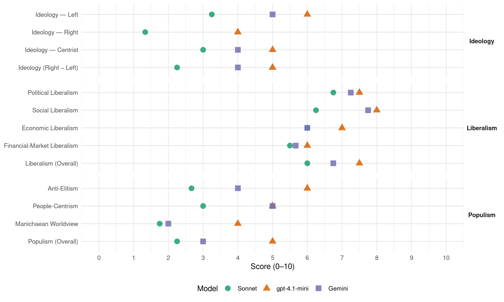

PVEM (Mexico, 2012)
manifesto_id 171101_201207
Get full text: This site shows derived annotations and short verbatim quotes only. The full manifesto text is © Manifesto Project / WZB — obtain it via manifesto-project.wzb.eu using the manifesto_id above.
Headline scores
| Dimension | Sonnet | gpt-4.1-mini | Gemini |
|---|---|---|---|
| Populism (Overall) | 2.2 | 5.0 | 3.0 |
| Anti-Elitism | 2.7 | 6.0 | 4.0 |
| People-Centrism | 3.0 | 5.0 | 5.0 |
| Manichaean Worldview | 1.8 | 4.0 | 2.0 |
| Ideology (Right − Left) | 2.2 | 5.0 | 4.0 |
| Liberalism (Overall) | 6.0 | 7.5 | 6.8 |
| Political Liberalism | 6.8 | 7.5 | 7.2 |
| Social Liberalism | 6.2 | 8.0 | 7.8 |
| Economic Liberalism | 6.0 | 7.0 | 6.0 |
| Financial-Market Liberalism | 5.5 | 6.0 | 5.7 |
Evidence per dimension
Economic Liberalism
Gemini · score 5.0 · mixed · chunk 1
“establecer mecanismos fiscales para la adopción”
Establecer mecanismos fiscales para la adopción de sistemas de riego por goteo
Gemini · score 6.0 · verified · chunk 2
“incentivar el mercado del reciclaje a través”
al relleno sanitario para evitar su desaprovechamiento y para incentivar el mercado del reciclaje a través de la certeza
Gemini · score 6.0 · verified · chunk 3
“incentiven fiscalmente la instalación de paneles”
Promover reformas legales y esquemas que incentiven fiscalmente la instalación de paneles solares en edificios públicos, hospitales, escuelas y empresas
Gemini · score 6.0 · verified · chunk 4
“disminuir el tiempo y costo que requiere una nueva empresa”
Propondremos modificaciones y reformas para disminuir el tiempo y costo que requiere una nueva empresa para instalarse.
gpt-4.1-mini · score 7.0 · verified · chunk 1
“La tendencia económica es buscar un equilibrio, entre el desarrollo de los procesos económicos (tecnológicos, industriales, entre otros), y la conservación del medio ambiente”
…Sabemos que al destruirla, destruiremos la vida toda. La tendencia es buscar un equilibrio entre el desarrollo de los procesos económicos y la conservación del medio ambiente. La tendencia económica es buscar un equilibrio, entre el desarrollo de los procesos económicos (tecnológicos, industriales, entre otros), y la conservación del medio ambiente. Cualquier desarrollo económico basado en la destrucción ambiental perjudica y produce pérdidas económicas y sociales…
gpt-4.1-mini · score 7.0 · verified · chunk 2
“la industria mexicana requiere, no nada más convertirse en competitiva a nivel internacional en cuanto a estándares de calidad ambiental”
…Por eso es necesaria una reconversión de uno de los motores del país: la industria. La industria mexicana requiere, no nada más convertirse en competitiva a nivel internacional en cuanto a estándares de calidad ambiental, sino también requiere ser un sector integral al perseguir sus objetivos comerciales y económicos protegiendo la salud y el ambiente de los ciudadanos mexicanos…
gpt-4.1-mini · score 7.0 · verified · chunk 3
“diversificar la producción primaria de energía mediante el uso de otras fuentes no fósiles”
…la transición energética, es decir, la serie de políticas y acciones que tienen por objeto diversificar la producción primaria de energía mediante el uso de otras fuentes no fósiles, apoyar la eficiencia energética en la generación y distribución de electricidad…
gpt-4.1-mini · score 7.0 · verified · chunk 4
“la economía mexicana en la 11.ª más grande del mundo”
Según datos de 2009 del Fondo Monetario Internacional (FMI), el Producto Interior Bruto (PIB), medido en paridad de poder adquisitivo (PPA), supera el billón de dólares, convirtiendo a la economía mexicana en la 11.ª más grande del mundo
Sonnet · score 5.0 · mixed · chunk 1
“equilibrio entre el desarrollo de los procesos económicos”
La tendencia económica es buscar un equilibrio, entre el desarrollo de los procesos económicos (tecnológicos, industriales, entre otros), y la conservación del medio ambiente
Sonnet · score 5.0 · mixed · chunk 2
“incentivos fiscales y financieros para apoyar a las industrias”
Promover incentivos fiscales y financieros para apoyar a las industrias medianas y pequeñas a fin de que adopten tecnologías limpias en sus procesos productivos
Sonnet · score 5.0 · mixed · chunk 3
“participación de investigadores y funcionarios en los foros internacionales”
Impulsar el desarrollo de proyectos que no se consideren en la modalidad de servicio público de energía eléctrica en los que participen la sociedad y el sector privado. Para ello será necesario revisar la normatividad vigente y promover su simplificación. Favorecer la investigación
Sonnet · score 6.0 · verified · chunk 4
“mayor eficiencia en la Hacienda Pública”
buscaremos el incremento de los ingresos tributarios, pero a través de una mayor eficiencia en la Hacienda Pública, conformando un base tributaria
Financial-Market Liberalism
Gemini · score 6.0 · verified · chunk 2
“otorguen a los inversionistas certeza jurídica”
reformas legales que otorguen a los inversionistas certeza jurídica.
Gemini · score 6.0 · verified · chunk 3
“esquemas de financiamiento para adquirir tecnología”
Promover la participación y cooperación de los sectores público, social y privado en el diseño de esquemas de financiamiento para adquirir tecnología que aproveche las fuentes renovables
Gemini · score 5.0 · verified · chunk 4
“regulación adecuada de las tasas de interés”
Demandar la intervención y responsabilidad del Banco de México para propiciar una regulación adecuada de las tasas de interés y comisiones bancarias.
gpt-4.1-mini · score 6.0 · verified · chunk 4
“Demanda de mayor regulación y transparencia en el manejo de la deuda pública”
Impulsar una agenda de responsabilidad en el manejo de la deuda pública de los tres órdenes de gobierno.
Sonnet · score 6.0 · verified · chunk 2
“certeza jurídica para inversionistas”
Prohibir el envío de materiales clave al relleno sanitario para evitar su desaprovechamiento y para incentivar el mercado del reciclaje a través de la certeza jurídica para inversionistas
Sonnet · score 5.0 · verified · chunk 4
“regulación adecuada de las tasas de interés”
Demandar la intervención y responsabilidad del Banco de México para propiciar una regulación adecuada de las tasas de interés y comisiones bancarias
Political Liberalism
Gemini · score 8.0 · verified · chunk 1
“instaurar formas democráticas de convivencia”
afirma la necesidad de instaurar formas democráticas de convivencia en la sociedad
Gemini · score 6.0 · verified · chunk 2
“Reformar la Constitución Política de los Estados”
Reformar la Constitución Política de los Estados Unidos Mexicanos para definir nuevos límites
Gemini · score 7.0 · verified · chunk 3
“la transparencia y la rendición de cuentas”
A través de ella se favorece la transparencia, la fiscalización de la gestión ambiental y la rendición de cuentas, se mejora la actuación de los responsables de la toma de decisiones
Gemini · score 8.0 · verified · chunk 4
“garantizar la independencia y autonomía de las entidades”
Elevar a rango constitucional el sistema de fiscalización, garantizar la independencia y autonomía de las entidades de fiscalización superior estatales.
gpt-4.1-mini · score 8.0 · verified · chunk 1
“El PVEM afirma la necesidad de instaurar formas democráticas de convivencia en la sociedad, los partidos políticos y el gobierno”
…la esfera pública. El PVEM afirma la necesidad de instaurar formas democráticas de convivencia en la sociedad, los partidos políticos y el gobierno. El PVEM quiere contribuir a formar una cultura genuinamente democrática que sea práctica regular en los distintos niveles del quehacer colectivo. Tolerancia, respeto a la diversidad y a la diferencia, son otras tantas normas que guían la práctica del PVEM en sus relaciones políticas con la sociedad y la esfera pública…
gpt-4.1-mini · score 7.0 · verified · chunk 2
“El Estado está obligado Constitucionalmente a garantizar el derecho de las personas a un medio ambiente adecuado para su desarrollo y bienestar”
…resarzan el daño ambiental. El Estado está obligado Constitucionalmente a garantizar el derecho de las personas a un medio ambiente adecuado para su desarrollo y bienestar y en consecuencia no puede permitir que estas industrias actúen al margen de las normas ambientales. Por eso es necesaria una reconversión de uno de los motores del país…
gpt-4.1-mini · score 8.0 · verified · chunk 3
“reforma en materia de seguridad pública”
…la reciente expedición de la Ley General del Sistema Nacional de Seguridad Pública con la que se establecen las bases para dignificar la labor de los cuerpos policiales, y con ello recuperar la confianza de la ciudadanía en sus instituciones y abatir el índice delictivo, existen muchas tareas pendientes.
gpt-4.1-mini · score 7.0 · verified · chunk 4
“la transparencia y la rendición de cuentas de los servidores públicos”
Por lo anterior debemos considerar la mejora de los Sistemas de Evaluación del Desempeño, como procesos que permiten establecer los mecanismos para la obtención de información con base en la evaluación de la gestión gubernamental, en términos de cumplimiento de objetivos y metas, así como de la generación de impactos.
Sonnet · score 7.0 · verified · chunk 1
“formas democráticas de convivencia en la sociedad”
El PVEM afirma la necesidad de instaurar formas democráticas de convivencia en la sociedad, los partidos políticos y el gobierno
Sonnet · score 6.0 · verified · chunk 2
“auditoría independiente ordenada por el Congreso de la Unión”
Impulsar una auditoría independiente ordenada por el Congreso de la Unión, a fin de evaluar la conveniencia de cerrar la planta de Laguna Verde, en materia de industria nuclear
Sonnet · score 7.0 · verified · chunk 3
“la consolidación del proceso de cambio cultural y de democratización del país”
propiciando con ello la consolidación del proceso de cambio cultural y de democratización del país. En México, la participación de la sociedad en la gestión ambiental es una de las más avanzadas
Sonnet · score 7.0 · verified · chunk 4
“autonomía a la Secretaría de la Función Pública”
Dotar de autonomía a la Secretaría de la Función Pública de manera que pueda erradicarse la corrupción sin que el conflicto de intereses sea un obstáculo
Liberalism (Overall)
Gemini · score 7.0 · verified · chunk 1
“instaurar formas democráticas de convivencia”
afirma la necesidad de instaurar formas democráticas de convivencia en la sociedad
Gemini · score 6.0 · verified · chunk 2
“incentivar el mercado del reciclaje a través”
al relleno sanitario para evitar su desaprovechamiento y para incentivar el mercado del reciclaje a través de la certeza
Gemini · score 7.0 · verified · chunk 3
“la transparencia y la rendición de cuentas”
A través de ella se favorece la transparencia, la fiscalización de la gestión ambiental y la rendición de cuentas, se mejora la actuación de los responsables de la toma de decisiones
Gemini · score 7.0 · verified · chunk 4
“garantizar la protección de los Derechos Humanos”
Promover reformas legislativas para garantizar la protección de los Derechos Humanos de los jóvenes creando una visitaduría de atención a la juventud.
gpt-4.1-mini · score 8.0 · verified · chunk 1
“El PVEM afirma la necesidad de instaurar formas democráticas de convivencia en la sociedad, los partidos políticos y el gobierno”
…la esfera pública. El PVEM afirma la necesidad de instaurar formas democráticas de convivencia en la sociedad, los partidos políticos y el gobierno. El PVEM quiere contribuir a formar una cultura genuinamente democrática que sea práctica regular en los distintos niveles del quehacer colectivo…
gpt-4.1-mini · score 7.0 · verified · chunk 2
“El Estado está obligado Constitucionalmente a garantizar el derecho de las personas a un medio ambiente adecuado para su desarrollo y bienestar”
…Por eso es necesaria una reconversión de uno de los motores del país: la industria. La industria mexicana requiere, no nada más convertirse en competitiva a nivel internacional en cuanto a estándares de calidad ambiental, sino también requiere ser un sector integral al perseguir sus objetivos comerciales y económicos protegiendo la salud y el ambiente de los ciudadanos mexicanos…
gpt-4.1-mini · score 8.0 · verified · chunk 3
“la transición energética, es decir, la serie de políticas y acciones”
…la transición energética, es decir, la serie de políticas y acciones que tienen por objeto diversificar la producción primaria de energía mediante el uso de otras fuentes no fósiles, apoyar la eficiencia energética en la generación y distribución de electricidad…
gpt-4.1-mini · score 7.0 · verified · chunk 4
“la transparencia y la rendición de cuentas de los servidores públicos”
Por lo anterior debemos considerar la mejora de los Sistemas de Evaluación del Desempeño, como procesos que permiten establecer los mecanismos para la obtención de información con base en la evaluación de la gestión gubernamental, en términos de cumplimiento de objetivos y metas, así como de la generación de impactos.
Sonnet · score 6.0 · verified · chunk 1
“canales democráticos instituidos”
utilizará los medios pacíficos y los canales democráticos instituidos como condición indispensable para conducir sus actividades públicas y privadas
Sonnet · score 6.0 · verified · chunk 2
“certeza jurídica para inversionistas”
Prohibir el envío de materiales clave al relleno sanitario para evitar su desaprovechamiento y para incentivar el mercado del reciclaje a través de la certeza jurídica para inversionistas
Sonnet · score 6.0 · verified · chunk 3
“la consolidación del proceso de cambio cultural y de democratización del país”
propiciando con ello la consolidación del proceso de cambio cultural y de democratización del país. En México, la participación de la sociedad en la gestión ambiental es una de las más avanzadas
Sonnet · score 6.0 · verified · chunk 4
“transparencia y la rendición de cuentas”
Consolidar una cultura de la transparencia y la rendición de cuentas, perfeccionando el marco normativo y fortaleciendo las facultades del Instituto Federal
Anti-Elitism
Gemini · score 3.0 · verified · chunk 2
“evitar fraudes y mejorar así el control”
con la finalidad de evitar fraudes y mejorar así el control en los registros de pesca
Gemini · score 5.0 · verified · chunk 3
“el gobierno no ha sido capaz”
la degradación ambiental es un tema que nos debe preocupar y ocupar, en las últimas décadas hemos perturbado la naturaleza de manera exponencial, el gobierno no ha sido capaz de respetar los principios de sustentabilidad de los que tanto alardea
Gemini · score 4.0 · verified · chunk 4
“presunta corrupción en el proceso de licitación”
irregularidades para la construcción de la misma, entre ellas la falta de una adecuada planeación del proyecto y la presunta corrupción en el proceso de licitación para la realización de la obra.
gpt-4.1-mini · score 6.0 · verified · chunk 4
“la corrupción rompe el tejido social pues disminuye la confianza de los ciudadanos en las instituciones”
Por lo anterior el Partido Verde Ecologista de México reconoce que la corrupción rompe el tejido social pues disminuye la confianza de los ciudadanos en las instituciones, el gobierno y entre ellos mismos y afecta también el nivel ético de la sociedad en su conjunto.
Sonnet · score 2.0 · verified · chunk 1
“programas encaminados a resolver este problema continúan siendo presa de enormes fallas y corrupción”
también es cierto el hecho de que los programas encaminados a resolver este problema continúan siendo presa de enormes fallas y corrupción en perjuicio de la ciudadanía
Sonnet · score 3.0 · verified · chunk 2
“SAGARPA a través de la Comisión Nacional de Acuacultura y Pesca, se ha abocado a permitir la captura desmedida”
la Secretaría de Agricultura, Ganadería, Desarrollo Rural, Pesca y Alimentación (SAGARPA) a través de la Comisión Nacional de Acuacultura y Pesca, se ha abocado a permitir la captura desmedida de ciertas especies con elevado valor comercial
Sonnet · score 3.0 · mixed · chunk 3
“el gobierno no ha sido capaz de respetar los principios de sustentabilidad”
la degradación ambiental es un tema que nos debe preocupar y ocupar, en las últimas décadas hemos perturbado la naturaleza de manera exponencial, el gobierno no ha sido capaz de respetar los principios de sustentabilidad de los que tanto alardea
Sonnet · score 3.0 · verified · chunk 4
“altos índices de corrupción en nuestro país”
las equivocadas estrategias y los altos índices de corrupción en nuestro país han traído consigo violencia, resentimientos, impunidad
Ideology — Centrist
Gemini · score 4.0 · verified · chunk 2
“concedidos directamente al pescador”
que actualmente se otorgan a un permisionario sean concesionados directamente al pescador, con la finalidad
gpt-4.1-mini · score 5.0 · verified · chunk 4
“Promover la participación política de los mexicanos residentes en el extranjero como integrantes de la Nación”
Promover la participación política de los mexicanos residentes en el extranjero como integrantes de la Nación y destacar su importancia para la vida política, económica, social y cultural del país.
Sonnet · score 4.0 · verified · chunk 1
“participación ciudadana, como el único medio para lograr resultados”
Participación Ciudadana, como el único medio para lograr resultados éxitosos en la implementación de políticas, proyectos y estrategias ambientales
Sonnet · score 2.0 · verified · chunk 2
“corresponsabilidad de los sectores, gubernamental, empresarial/industrial y ciudadano”
que supone la corresponsabilidad de los sectores, gubernamental, empresarial/industrial y ciudadano, para reducir la cantidad de residuos que llegan a un relleno sanitario
Sonnet · score 3.0 · verified · chunk 3
“Nuestra propuesta debe ser clara, concreta y en beneficio de los ciudadanos”
Nuestra propuesta debe ser clara, concreta y en beneficio de los ciudadanos, es por ello que con una visión a largo plazo debemos aumentar la tendencia a incrementar el gasto ambiental
Sonnet · score 3.0 · verified · chunk 4
“No somos portadores de argumentos simples”
No somos portadores de argumentos simples o utópicos. Los brutales desequilibrios sociales que han provocado el cambio
Ideology — Left
Gemini · score 5.0 · verified · chunk 2
“otorgándoles a las personas derechos y beneficios”
sistemas de gestión de residuos sólidos, otorgándoles a las personas derechos y beneficios como seguro social
Gemini · score 5.0 · verified · chunk 3
“los índices de desigualdad social”
no obtendremos solo con el crecimiento económico debido a que los índices de desigualdad social siguen creciendo y este no se ve reflejado en los bolsillos de las familias mexicanas.
gpt-4.1-mini · score 6.0 · verified · chunk 4
“la desigualdad social que persiste entre la población de México”
Uno de ellos es la desigualdad social que persiste entre la población de México y genera una alta diversidad de situaciones que limitan las estructuras de oportunidades en las que se desenvuelven los jóvenes, generando mayor vulnerabilidad entre ellos.
Sonnet · score 3.0 · verified · chunk 1
“derechos humanos como parte central de su posición”
El PVEM defiende los derechos humanos como parte central de su posición en la sociedad. Reivindica la igualdad de derechos y oportunidades para todos los mexicanos
Sonnet · score 3.0 · verified · chunk 2
“internalización de los costos ambientales no es una práctica común”
la internalización de los costos ambientales no es una práctica común de la industria nacional y sólo a raíz del incremento en los estándares ambientales, es como las industrias invierten recursos tecnológicos
Sonnet · score 3.0 · verified · chunk 3
“los índices de desigualdad social siguen creciendo”
no obtendremos solo con el crecimiento económico debido a que los índices de desigualdad social siguen creciendo y este no se ve reflejado en los bolsillos de las familias mexicanas
Sonnet · score 4.0 · verified · chunk 4
“brecha más grande entre los individuos”
México cuenta con la brecha más grande entre los individuos que perciben más ingresos y los que perciben menos ingresos
Ideology (Right − Left)
Gemini · score 4.0 · verified · chunk 2
“otorgándoles a las personas derechos y beneficios”
sistemas de gestión de residuos sólidos, otorgándoles a las personas derechos y beneficios como seguro social
Gemini · score 4.0 · verified · chunk 3
“los índices de desigualdad social”
no obtendremos solo con el crecimiento económico debido a que los índices de desigualdad social siguen creciendo y este no se ve reflejado en los bolsillos de las familias mexicanas.
gpt-4.1-mini · score 5.0 · verified · chunk 4
“la corrupción rompe el tejido social pues disminuye la confianza de los ciudadanos en las instituciones”
Por lo anterior el Partido Verde Ecologista de México reconoce que la corrupción rompe el tejido social pues disminuye la confianza de los ciudadanos en las instituciones, el gobierno y entre ellos mismos y afecta también el nivel ético de la sociedad en su conjunto.
Sonnet · score 2.0 · verified · chunk 1
“instrumento político de representación social de las causas ecologistas”
el Partido Verde Ecologista de México, se ha erigido como el instrumento político de representación social de las causas ecologistas de México
Sonnet · score 2.0 · verified · chunk 2
“internalización de los costos ambientales no es una práctica común”
la internalización de los costos ambientales no es una práctica común de la industria nacional y sólo a raíz del incremento en los estándares ambientales, es como las industrias invierten recursos tecnológicos
Sonnet · score 2.0 · verified · chunk 3
“los índices de desigualdad social siguen creciendo”
no obtendremos solo con el crecimiento económico debido a que los índices de desigualdad social siguen creciendo y este no se ve reflejado en los bolsillos de las familias mexicanas
Sonnet · score 3.0 · verified · chunk 4
“brecha más grande entre los individuos”
México cuenta con la brecha más grande entre los individuos que perciben más ingresos y los que perciben menos ingresos
Ideology — Right
gpt-4.1-mini · score 4.0 · verified · chunk 4
“trabajar conjuntamente con el Gobierno de Estados Unidos para analizar el flujo ilegal y masivo de armamento”
Por lo cual es de suma importancia para el Partido Verde Ecologista de México trabajar en la protección y blindaje de nuestras fronteras y trabajar conjuntamente con el Gobierno de Estados Unidos para analizar el flujo ilegal y masivo de armamento de alto calibre hacia nuestro país.
Sonnet · score 1.0 · verified · chunk 1
“autonomía interna y externa”
En el PVEM se establece categóricamente la obligación de no aceptar pacto o acuerdo que lo sujete o subordine a cualquier organización internacional
Sonnet · score 1.0 · verified · chunk 2
“Exigir al Ejecutivo Federal una moratoria de importaciones de maíz genéticamente modificado”
Exigir al Ejecutivo Federal una moratoria de importaciones de maíz genéticamente modificado, hasta que se tenga mayor conocimiento científico de las consecuencias por la contaminación genética
Sonnet · score 2.0 · verified · chunk 4
“proteger y blindar nuestras fronteras”
trabajar en la protección y blindaje de nuestras fronteras y trabajar conjuntamente con el Gobierno de Estados Unidos
Manichaean Worldview
Gemini · score 2.0 · verified · chunk 2
“por las graves afectaciones que estas”
utilizados como combustible alterno por las graves afectaciones que estas prácticas tiene a la salud
gpt-4.1-mini · score 4.0 · verified · chunk 4
“la delincuencia va cambiando estrategias para lograr su objetivo”
la delincuencia va cambiando estrategias para lograr su objetivo. En referencia a la problemática descrita, es urgente atacar aspectos medulares que, en materia de seguridad pública, han contribuido a un aumento del índice delictivo, entre ellos:
Sonnet · score 1.0 · verified · chunk 1
“corrupción en perjuicio de la ciudadanía”
programas encaminados a resolver este problema continúan siendo presa de enormes fallas y corrupción en perjuicio de la ciudadanía y de las políticas ambientales
Sonnet · score 2.0 · verified · chunk 2
“resulta inaceptable que las principales industrias del país”
En este sentido resulta inaceptable que las principales industrias del país, propiedad del Estado Mexicano, como es el caso de PEMEX y la Comisión Federal de Electricidad, sean las principales responsables de innumerables atentados contra el medio ambiente
Sonnet · score 2.0 · verified · chunk 3
“el gobierno no ha sido capaz de respetar”
hemos perturbado la naturaleza de manera exponencial, el gobierno no ha sido capaz de respetar los principios de sustentabilidad de los que tanto alardea, y tarde o temprano tendremos que pagar
Sonnet · score 2.0 · verified · chunk 4
“la corrupción rompe el tejido social”
el Partido Verde Ecologista de México reconoce que la corrupción rompe el tejido social pues disminuye la confianza de los ciudadanos
People-Centrism
Gemini · score 4.0 · verified · chunk 2
“en beneficio de la captura de carbono”
ecosistemas forestales y en beneficio de la captura de carbono, por el mayor porcentaje
Gemini · score 6.0 · verified · chunk 3
“en beneficio de los ciudadanos”
los índices de desigualdad social siguen creciendo y este no se ve reflejado en los bolsillos de las familias mexicanas. Nuestra propuesta debe ser clara, concreta y en beneficio de los ciudadanos, es por ello que con una visión a largo plazo
gpt-4.1-mini · score 5.0 · verified · chunk 4
“Promover la participación política de los mexicanos residentes en el extranjero como integrantes de la Nación”
Promover la participación política de los mexicanos residentes en el extranjero como integrantes de la Nación y destacar su importancia para la vida política, económica, social y cultural del país.
Sonnet · score 3.0 · verified · chunk 1
“fuerza política de los ciudadanos que participan democrática y libremente”
El Partido Verde Ecologista de México tiene como visión ser la fuerza política de los ciudadanos que participan democrática y libremente en las decisiones fundamentales
Sonnet · score 2.0 · verified · chunk 2
“afectara a todos los sectores de la población, en especial a los más débiles”
abordándolo como un problema de seguridad nacional, que afectara a todos los sectores de la población, en especial a los más débiles
Sonnet · score 3.0 · verified · chunk 3
“al final los ciudadanos tendremos que pagar los daños”
la carrera contra el deterioro ambiental de este país está perdida y que al final los ciudadanos tendremos que pagar los daños producidos
Sonnet · score 4.0 · verified · chunk 4
“los mexicanos destinaron más de 32.000 millones”
en ese año los mexicanos destinaron más de 32.000 millones de pesos en sobornos, frente a los 27.000 millones de pesos registrados en 2007
Populism (Overall)
Gemini · score 3.0 · verified · chunk 2
“evitar fraudes y mejorar así el control”
con la finalidad de evitar fraudes y mejorar así el control en los registros de pesca
Gemini · score 4.0 · verified · chunk 3
“en beneficio de los ciudadanos”
los índices de desigualdad social siguen creciendo y este no se ve reflejado en los bolsillos de las familias mexicanas. Nuestra propuesta debe ser clara, concreta y en beneficio de los ciudadanos, es por ello que con una visión a largo plazo
Gemini · score 2.0 · verified · chunk 4
“presunta corrupción en el proceso de licitación”
irregularidades para la construcción de la misma, entre ellas la falta de una adecuada planeación del proyecto y la presunta corrupción en el proceso de licitación para la realización de la obra.
gpt-4.1-mini · score 5.0 · verified · chunk 4
“la corrupción rompe el tejido social pues disminuye la confianza de los ciudadanos en las instituciones”
Por lo anterior el Partido Verde Ecologista de México reconoce que la corrupción rompe el tejido social pues disminuye la confianza de los ciudadanos en las instituciones, el gobierno y entre ellos mismos y afecta también el nivel ético de la sociedad en su conjunto.
Sonnet · score 2.0 · verified · chunk 1
“fallas y corrupción en perjuicio de la ciudadanía”
los programas encaminados a resolver este problema continúan siendo presa de enormes fallas y corrupción en perjuicio de la ciudadanía y de las políticas ambientales
Sonnet · score 2.0 · verified · chunk 2
“afectara a todos los sectores de la población, en especial a los más débiles”
abordándolo como un problema de seguridad nacional, que afectara a todos los sectores de la población, en especial a los más débiles
Sonnet · score 2.0 · verified · chunk 3
“al final los ciudadanos tendremos que pagar los daños”
la carrera contra el deterioro ambiental de este país está perdida y que al final los ciudadanos tendremos que pagar los daños producidos
Sonnet · score 3.0 · verified · chunk 4
“altos índices de corrupción en nuestro país”
las equivocadas estrategias y los altos índices de corrupción en nuestro país han traído consigo violencia, resentimientos, impunidad
Social Liberalism